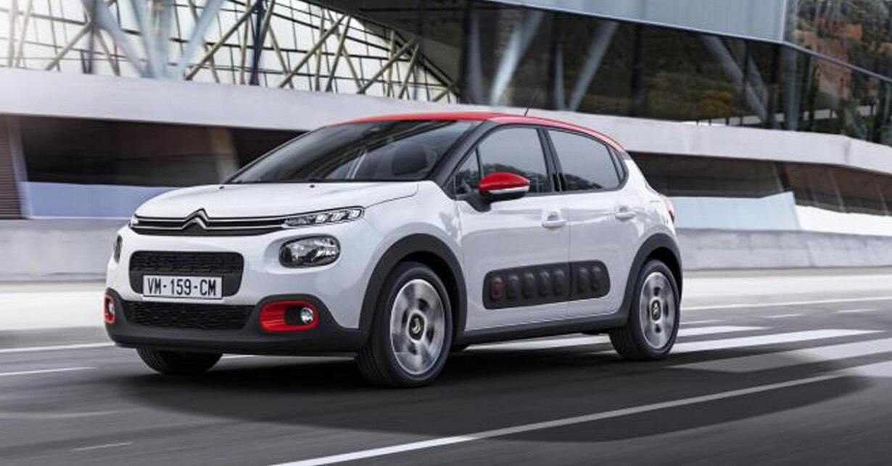

CITROEN
CITROEN

El fabricante Citroën pertenece al grupo francés PSA desde el año 1976..
¿Quién es el dueño de Citroen?
André-Gustave Citroën fue un ingeniero francés, fundador de la marca automovilística Citroën en 1919.
Fue el primero en Europa en emplear métodos de trabajo en cadena.
Algunas de sus innovaciones fueron el encendido eléctrico y la tracción delantera.
La marca Citroën siempre ha destacado por su tecnología creativa, tal y como reza su eslogan. Desde sus orígenes a principios del siglo XX, la marca francesa ha apostado por la innovación y ha sido pionera en el uso de la tracción delantera, las carrocerías autoportantes o la suspensión hidroneumática.
Además de su ingenio tecnológico, Citroën se ha desmarcado del resto de fabricantes por sus diseños audaces y, de hecho, es una de las pocas marcas que cuentan con varios modelos considerados entre los más influyentes en la historia del automóvil, como el Citroën 2CV, el Citroën DS o los conocidos como “Traction” de comienzos del siglo XX por el uso de la tracción delantera, una seña de identidad de la marca.
En la actualidad, Citroën es una de las compañías líderes en volumen de ventas, especialmente en mercados como el español, donde la marca cuenta con dos fábricas -una en Vigo (Pontevedra) y otra en Villaverde (Madrid)- donde se producen en exclusiva modelos como el Citroën C4 Picasso y Gran Picasso, el Berlingo o su éxito más reciente, el Citroën C4 Cactus, que también destaca por soluciones audaces como los airbumps.
.